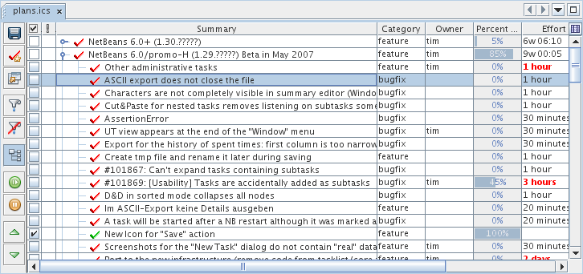

Using the Task List Table
Choosing visible columns/Sorting/Editing
Tasks have many properties, and by default only a few of
these properties are shown in the task list table. You can set
the sorting column by simply clicking on a table header.
Clicking repeatedly will reverse the sort order and turn off the
sorting.
Use F2 to start editing a cell. You can also change the visible columns by clicking the
little icon ( )
which
appears to the right of the table headers,
straight above the vertical scrollbar (see image below). You may select
multiple tasks and change some properties of the selected tasks at
once. The view also remembers selected tasks and scrollbar positions.
Different icons are used for undone (
)
which
appears to the right of the table headers,
straight above the vertical scrollbar (see image below). You may select
multiple tasks and change some properties of the selected tasks at
once. The view also remembers selected tasks and scrollbar positions.
Different icons are used for undone ( ) and
done (
) and
done ( ) tasks.
The same icons are used in
the editor if a line is associated with the task. Tasks can also be expanded/collapsed using keyboard (Right/Left).
) tasks.
The same icons are used in
the editor if a line is associated with the task. Tasks can also be expanded/collapsed using keyboard (Right/Left).
If a task list is presented as a plain list without category tasks sorting a column leads also to automatic grouping.
Drag & Drop support:
- columns can be reordered by dragging
them around
- tasks can be moved and copied (use system specific modifier keys like Control in KDE)
- dropping a task over an editor pastes it's summary
- dropping some text over a task creates a new one (dragged text is used for summary of newly created task)
- dropping a link from Firefox creates a task with page's title as the summary and corresponding URL

Available columns:
- Summary - Summary for
the task. The summary is painted in bold if the task is running.
- Priority - Contains the
priority of the task.
- Done - Shows whether
a particular task is done. A task is done when it's percent
complete value is 100%.
- Percent Complete - Shows
completion status of a task.
- Effort - Effort cells are
painted
in red using a bold font if the sum of the spent time and the remaining
effort exceeds
the planed effort.
- Rem. Effort - Remaining
effort. This value is computed as Effort * (1 - Percent Complete)
- Spent Time - Shows the
time that was spent working on this task.
- Details - Here you can
write a longer description of the task
- File - Contains URL
associated with the task.
- Line - Contains the line
number in the associated file.
- Category - A possible
category for the task.
- Created - The date when
the task was created.
- Edited - The date when
the task was last edited.
- Completed - This columns
contains the date when a particular task was completed. It
will be filled automatically if you mark a task as done.
- Due date - Due date is
painted in red if the deadline was not met.
- Start - Planned start
date for the task.
- Spent Time Today - Shows the time that was spent working on
the
task today.
Comments & requests to dev@tasklist.netbeans.org.
Further information at http://tasklist.netbeans.org.